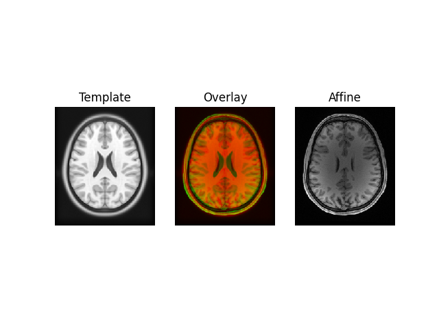
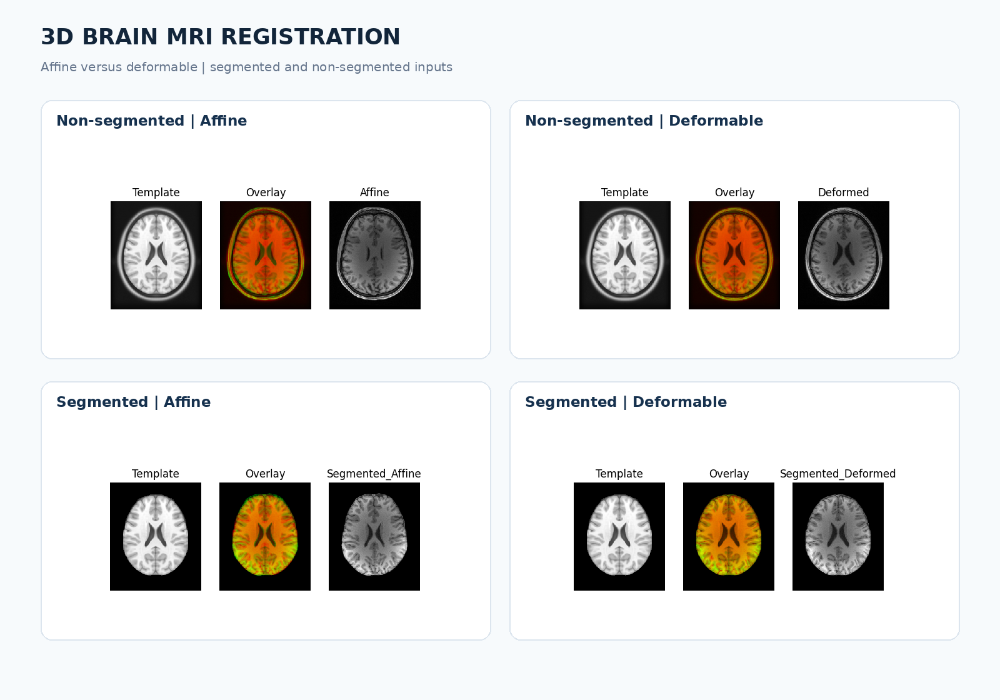
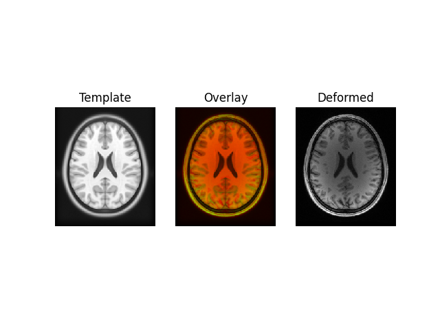
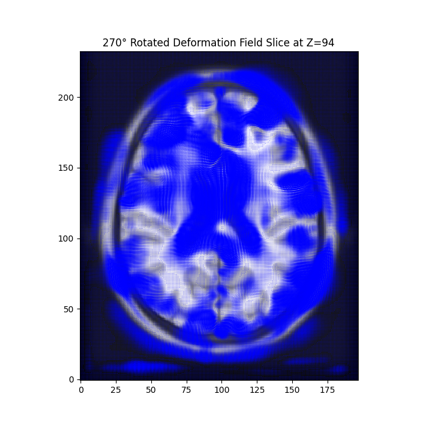
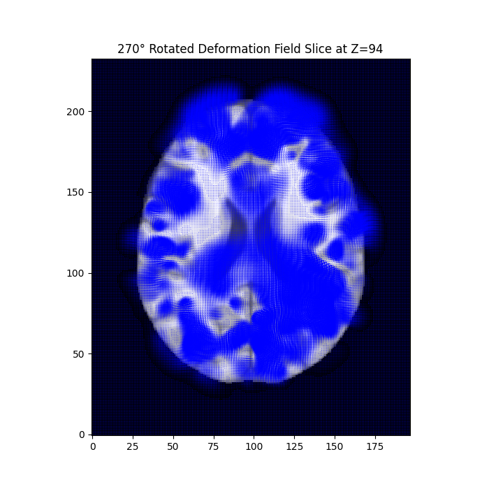

Affine registration
Global transformation estimated using mutual-information optimization.
Comparing affine and deformable registration on segmented and non-segmented brain volumes using Python and DIPY.
This academic investigation aligns patient brain MRI volumes with reference atlases. A staged translation–rigid–affine pipeline estimates global alignment, followed by symmetric diffeomorphic registration to model local differences. Both methods were evaluated on segmented and non-segmented input data.

Reported laboratory values only; not recomputed after source corrections. MSE was lower for affine registration in the same segmented experiment. Dice was based on thresholded foreground overlap, not independently validated anatomy.

Global transformation estimated using mutual-information optimization.

Local alignment using symmetric diffeomorphic deformation.


Python · DIPY · NumPy · NiBabel · SciPy · scikit-learn · Matplotlib · NIfTI · Mutual Information · Cross-correlation
This is a standalone HTML preview. Source code, the full report, and a detailed README live in the repository. Research example only; not validated for clinical diagnosis.